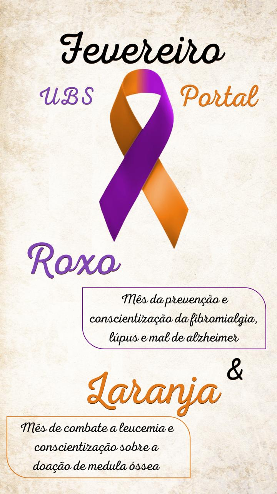

Modo Noturno
Mapa dos ACS'S
Atendimentos
Contato
Planejamento Familiar
Salva Vidas
Procedimentos de Emergência
RCP (Ressuscitação Cardiopulmonar):
Posicione as mãos sobre o centro do peito da vítima.
Realize 30 compressões torácicas seguidas de 2 ventilações.
Continue até a chegada do socorro ou a vítima recuperar os sinais vitais.
Pressão Arterial:
Hipertensão (Pressão Alta): Pode causar AVC, infarto e insuficiência renal.Hipotensão (Pressão Baixa): Pode causar tontura, desmaios e choque circulatório.Se alta: evite sal, relaxe e procure ajuda médica.
Se baixa: beba água, deite-se e levante as pernas.
Infarto (Ataque Cardíaco):
Dor intensa no peito, irradiando para braço e mandíbula.
Dificuldade para respirar, suor excessivo e náusea.
Chame o socorro imediatamente e mantenha a vítima calma.
Engasgo:
Se a pessoa não conseguir respirar ou falar, realize a manobra de Heimlich.
Fique atrás, pressione a barriga para cima com força.
Repita até o objeto ser expelido ou a vítima desmaiar.
Afogamento:
Retire a vítima da água com segurança.
Se não respirar, inicie a RCP imediatamente.
Evite entrar na água se não tiver treinamento adequado.
Choque Elétrico:
Desligue a fonte de energia antes de tocar na vítima.
Se não respirar, inicie a RCP.
Leve a vítima ao hospital, pois choques podem causar danos internos.
Picadas de Animais Peçonhentos:
Mantenha a vítima calma e imóvel.
Não tente sugar o veneno ou cortar o local.
Leve a vítima rapidamente ao hospital e, se possível, identifique o animal.
Números de Emergência:
SAUR: 192Bombeiros: 193Polícia Militar: 190Guarda Municipal: 153
Contatos Úteis
Direitos e Deveres
Direitos e Deveres dos Cidadãos e Funcionários Públicos
A seguir, apresentamos os direitos e deveres que regem a atuação dos ACS e funcionários públicos, garantindo a qualidade do atendimento aos pacientes:
Direito à Saúde: Garantido pelo Art. 196 da Constituição Federal , o acesso universal e igualitário à saúde é um direito de todos.Atendimento Digno: Conforme o Art. 3º da Lei 8.080/90 , os cidadãos têm direito ao atendimento respeitoso e eficiente no SUS.Sigilo Médico: O Art. 5º, inciso X da Constituição assegura a privacidade dos pacientes.Medicamentos e Tratamentos: A Lei 8.080/90 garante o acesso a medicamentos essenciais gratuitamente pelo SUS.Direito à Capacitação dos Profissionais: Conforme o Art. 27 da Lei 8.080/90 , os profissionais de saúde devem receber treinamentos constantes.Dever de Zelo: É obrigação dos agentes oferecer atendimento de excelência e com respeito aos direitos dos cidadãos.Direito à Remuneração Justa: Garantia de uma remuneração compatível com a responsabilidade e carga horária.Dever de Sigilo: Manter a confidencialidade das informações dos pacientes, em conformidade com as normas éticas.Direito à Segurança: Assegura-se ambientes de trabalho seguros e adequados para a prática profissional.Dever de Atendimento: Prestação de serviços de saúde de forma humanizada e seguindo os protocolos estabelecidos.Art. 196 da Constituição Federal: A saúde é direito de todos e dever do Estado, garantido mediante políticas sociais e econômicas que visem à redução do risco de doenças e ao acesso universal e igualitário às ações e serviços para sua promoção, proteção e recuperação.Art. 198: O Sistema Único de Saúde (SUS) deve ser descentralizado, com participação da comunidade e atendimento integral.Lei 8.080/1990: Regula as condições para a promoção, proteção e recuperação da saúde, além da organização e funcionamento dos serviços.Lei 8.142/1990: Garante a participação popular no SUS por meio dos Conselhos e Conferências de Saúde.
Estas orientações têm respaldo em diversos dispositivos legais e normativos, visando proteger tanto os profissionais quanto os pacientes.
Atendimentos Médicos e Especialistas
Especialidade
Profissional
Dias/Horários
Sala 02 - Médica da Família
Bianca
Todos os dias
Sala 01 - Médica da Família
Middy
Terça a Sexta-feira; Segunda-feira: vago
Pediatria
Nairobi
Segunda-feira
Ginecologia
José Adalberto
Sexta-feira
Psicologia
Liege
Quarta e Quinta-feira
Nutrição
Tatiane
Quinta-feira
Odontologia
Ana
Sexta-feira
Locais de Atuação dos Agentes Comunitários de Saúde (ACS)
Clique em uma rua para ver os ACS responsáveis:
Equipes de Saúde da Família
ESF 1
Middihan Nascimento (Médica)Márcia Cruz (Enfermeira)ACS Luana
ACS Nadieli
ACS Sol
ACS Kelly
ACS Susana
ACS Fernanda
ACS Patrícia
ACS Débora
ACS Bruna
ESF 2
Bianca Nicoleti (Médica)Thais (Enfermeira)ACS Vanessa
ACS Vitor
ACS Maylon
ACS Marina
ACS Felix
ACS Regina
ACS Tais
ACS Késia
üìç Localiza√ß√£o
üì¶ Retirada de Insumos
Oferecemos atendimento para retirada de insumos de diabetes, fraldas e materiais.
üïí Horário: Segunda a Quinta, das 9h √†s 15h .
Cronograma da Enfermeira Thais
Dia
Atividades
Segunda-feira
Pré-natal e Puerpera, Demanda Espontânea, Verificação de e-mails (Sala GO)
Terça-feira
Papanicolaou, Demanda Espontânea (Sala GO)
Quarta-feira
Papanicolaou, Impressão de Resultados de Papa Semanal (Sala GO)
Quinta-feira
Planejamento Familiar, Verificar Processos de Planejamento (Sala GO)
Sexta-feira
Reunião de Equipe, Atendimento na Pediatria
Cronograma da Enfermeira Márcia Cruz
Dia
Atividades
Segunda-feira
Pré-natal e Puerpera, Demanda Espontânea, Verificação de e-mails (Sala GO)
Terça-feira
Papanicolaou, Demanda Espontânea (Sala GO)
Quarta-feira
Papanicolaou, Envio das lâminas de Papanicolaou (Sala GO)
Quinta-feira
Planejamento Familiar, Verificar processos de planejamento (Sala GO)
Sexta-feira
Reunião de Equipe, Atendimento na Pediatria
Dias de Coleta
Segunda-feira: Coletas na última semana do mês.
Quarta-feira: Visita à tarde.
Quinta-feira: Visita pela manhã.
Localização e Contato
Endereço: Rua Cardeal, Portal das Laranjeiras
Telefone: (11) 4800-5024
CNES: 4737423
Fluxo do Planejamento Familiar - Vasectomia e Laqueadura
Agendar consulta com o enfermeiro na recepção, onde deve ser entregue o papel com data e horário da consulta, além dos documentos necessários para trazer, e o paciente deve ser orientado sobre isso.
Consulta com o enfermeiro com documentos em mãos.
Assinatura do psicólogo.
Assinatura do assistente social.
O paciente deve trazer os resultados dos exames solicitados.
Mediante exames, mostrar para a médica responsável da equipe para avaliação.
Passar para Jéssica realizar a inserção em sistema.
Quando sair a consulta com cirurgião, o paciente deve comparecer à UBS e retirar o processo de Planejamento Familiar com o enfermeiro.
OBS: Casos de gestantes, não é necessário passar para inserção no sistema, basta entregar em mãos para que seja feita pelo enfermeiro.
Horário de Funcionamento: Segunda a Sexta-feira, das 7h às 17h
UBS Portal das Laranjeiras - Contato: (11) 4800-5024 | Endereço: Rua Cardeal, Portal das Laranjeiras